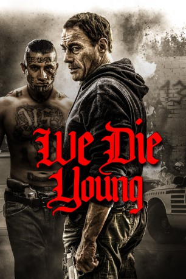

#11232 We Die Young
 gesehen am 29.05.2019
gesehen am 29.05.2019
 
 IMDB-Wertung: 5.5 / 10
IMDB-Wertung: 5.5 / 10  Metascore: 0
Metascore: 0 
Lucas (Elijah Rodriguez) ist erst 14 Jahre alt, arbeitet aber bereits als Drogenkurier für eine der gefährlichsten Gangs von ganz Washington. Als die „MS13“ genannte Gangster-Vereinigung auch Lucas‘ zehnjährigen Bruder Miguel (Nicholas Sean Johnny) rekrutieren will, kann er nicht tatenlos zusehen und gemeinsam versuchen sie der Unterwelt zu entkommen. Das sieht Boss Rincon (David Castañeda) wiederum gar nicht gerne und schickt seine Schergen hinter den Brüdern her. Doch auf der Flucht läuft ihnen zum Glück der in die Jahre gekommene Kriegsveteran Daniel (Jean-Claude Van Damme) über den Weg. Und der unterstützt Lucas und Miguel fortan bei ihrem Plan, blutige Rache zu nehmen…
Jahr: 2019
Dauer: 93 Minuten
FSK: 18
Land: Bulgarien Studio: ACE EntertainmentTonspuren: DD5.1 - ,
Untertitel: Deutsch,
Auflösung: 1080p (1920x808) Größe: 8386 MB
Genre: Drama
Regisseur: Lior Geller
Drehbuch: Lior Geller, Lior Geller, Andrew Friedman, Lior Geller
Soundtrack: Erez Koskas
Darsteller:
 Jean-Claude Van Damme als Daniel
Jean-Claude Van Damme als Daniel- David Castañeda als Rincon
- Elijah Rodriguez als Lucas
- Nicholas Sean Johnny als Miguel
- Charlie MacGechan als Jester
- Joana Metrass als Anna
- Kerry Bennett als Brenda
 Uriel Emil als Spider
Uriel Emil als Spider- Pablo Scola als Padre Orelio
- Robyn Cara als Gabriela
- Jacob Scipio als Tomas
 Joseph Long als Luis
Joseph Long als Luis- Karlos Klaumannsmoller als Tomas' Father
- Gary Beadle als Winslow
- Niccolò Besio als Zico
 Atanas Srebrev als FBI Agent One
Atanas Srebrev als FBI Agent One Owen Davis als Vendor
Owen Davis als Vendor- Gonzalo Ramos als Rapper One
- Silviya Stanoeva als Spanish Girl (uncredited)
- Dean John-Wilson als Mousey
- Jim Caesar als Felix
- Tony Wredden als Carlo
- Danny Rico Soto als Rodrigo
- Petar Petrov als Rudy
- Andy Raychev als Photographer
- Evelin Kostova als Gabriela's Girlfriend
- Alfonso Matos als FBI Agent Two
- Gergana Dandanova als Afghan Woman
- Laura Giosh als Teacher
- Miguel Harichi als Rapper Two
- Christopher Mata als Thug #2
Datei: X:\FSK18-2019\We Die Young (2019, FSK18, 1920x808).mkv seit 24.05.2019
Festplatte: FSK18
 Es gibt insgesamt 10 Filme in der Gruppe 'FSK18-2019'
Es gibt insgesamt 10 Filme in der Gruppe 'FSK18-2019'